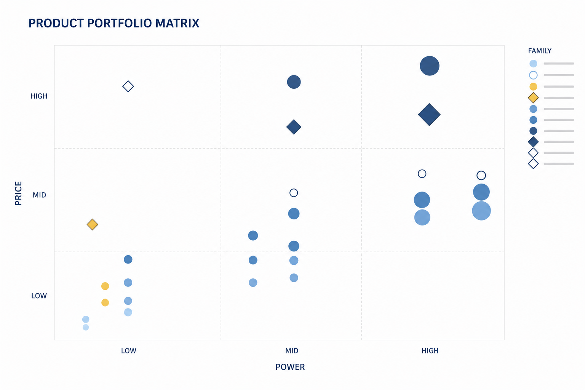
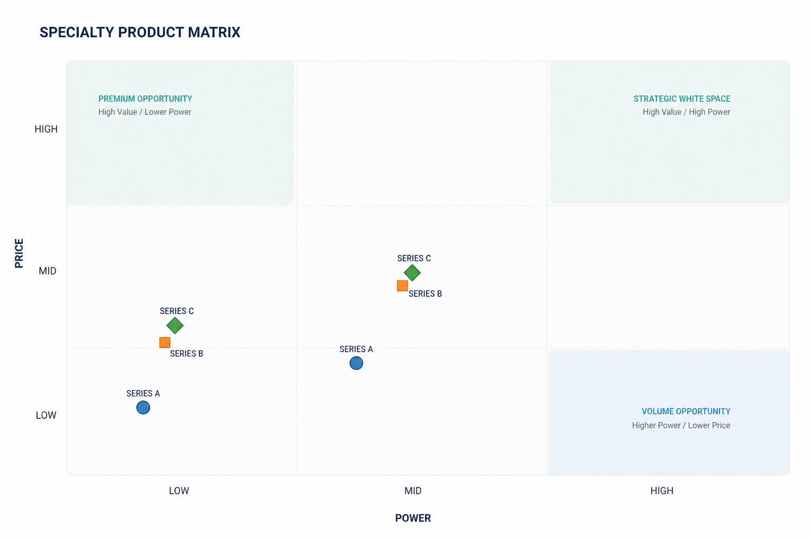
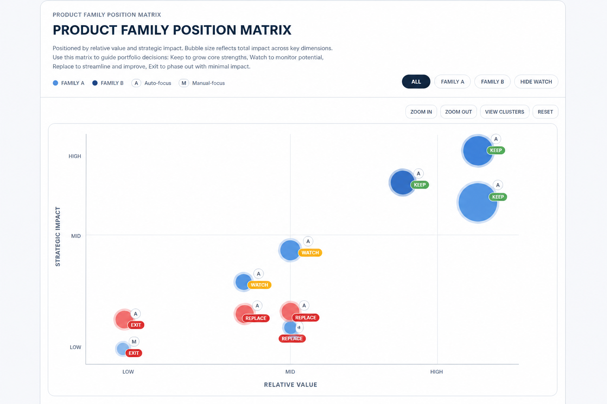
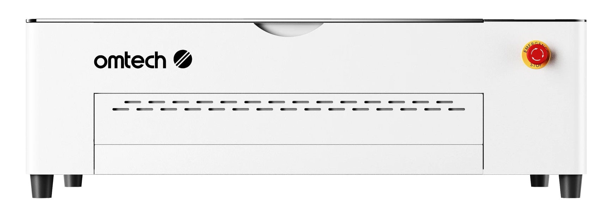
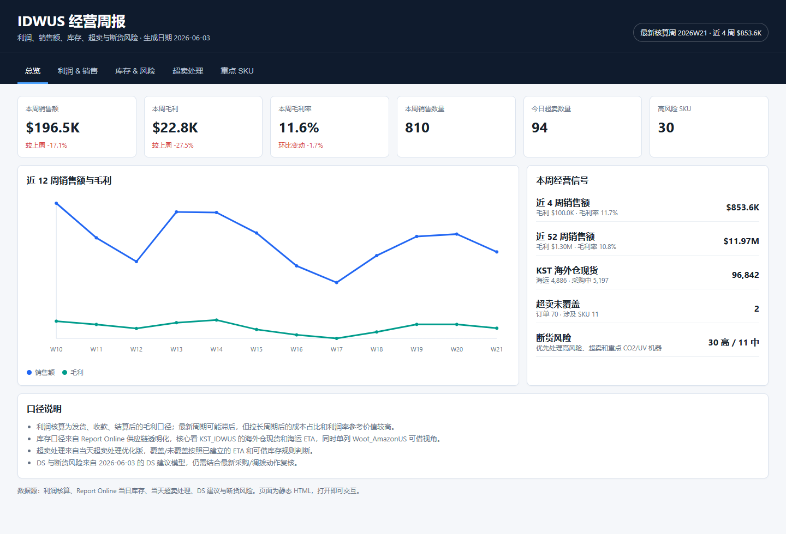
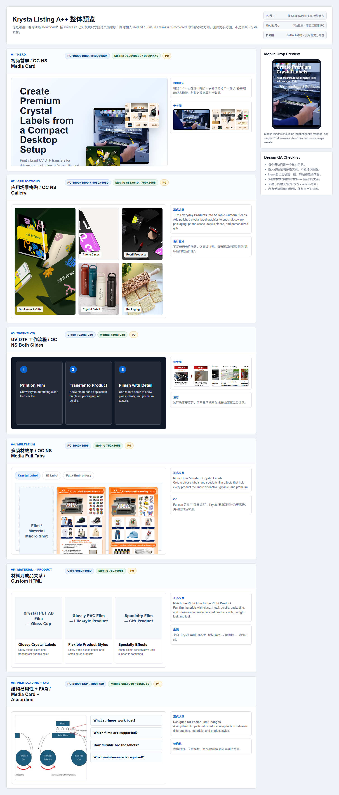
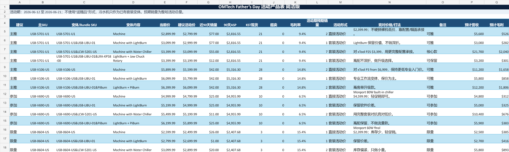

PORTFOLIO · REAL PROJECT ARCHIVE
从信息中
形成判断
九个真实项目，覆盖市场、产品、用户、经营与跨团队推进。工具与报表用于提供证据，重点呈现如何理解问题、形成判断并推动结果。
CASE 01 · PRODUCT PORTFOLIO
产品组合与市场位置分析
把不同产品放进统一视角，观察市场覆盖、内部重叠和新旧产品承接关系。
01
MARKET MAP × BUSINESS SIGNAL
从产品分布形成组合判断
矩阵不是结果，而是把价格位置、需求覆盖、销量与利润放在一起比较的起点。
重叠区域机会空间A1A2B1C1D1E1



CASE 02 · COMPETITIVE LANDSCAPE
加拿大市场竞品矩阵
从公开市场资料中识别价格密集区、品牌覆盖范围与可能的市场空位。
02
BRAND × PRICE BAND × POSITION
把分散竞品放进同一市场坐标
比较的重点不是单个参数，而是不同品牌正在争夺哪一类用户和哪一段预算。
PREMIUMMID-HIGHMIDENTRY
BRAND A
BRAND B
BRAND C
OMTECH
CASE 03 · USER JOURNEY
用户购买路径与产品搭配分析
从跨店铺历史订单中还原购买顺序，再把用户行为转化为产品组合和内容策略。
03
RAW ORDER → MATCH → SEQUENCE → PATH
从订单记录还原真实购买路径
完成用户匹配、订单清理和时间排序后，将行为划分为四类可比较路径。
随主产品购买主产品配件———
同单搭配—主产品配件——
购买后追加主产品+14D+30D配件—
配件先行配件+21D主产品——
主产品配件时间与比例均使用相对表达
CASE 04 · POST-LAUNCH SIGNAL
新品上市后的市场与用户反馈判断
把销售、广告和咨询放在同一时间段中，验证新品受到怎样的关注，以及页面是否回答了关键问题。
04
SALES × MEDIA × CUSTOMER VOICE
从三类信号判断新品初期表现
初期成交量有限时，广告反应与用户问题可以帮助解释市场关注方向，但结论保持阶段性。

NEW PRODUCT真实产品图 · 名称在公开版中可替换
AD SIGNAL
28,032展示 · 542 点击
SALES
首笔订单确认市场已有成交反馈
QUESTIONS
4 类主题长材料 · 旋转配件 · 套装 · 升级
CASE 05 · BUSINESS REVIEW
经营信息整合与趋势判断
让销售、广告、利润和库存进入同一视图，减少单看某个指标造成的判断偏差。
05
SALES × ADS × PROFIT × INVENTORY
用统一经营视图识别变化与风险
数据更新时间与统计口径也进入主视图，帮助判断哪些结论可以行动，哪些仍需观察。

REAL REPORT · IDENTIFIERS REDACTEDCASE 06 · DEMAND & AVAILABILITY
销售趋势与库存风险预测
通过需求节奏、可用库存、超卖与到货时间，判断哪些产品需要提前调整。
06
56 SKU × 1,473 SALES LINES
将销售变化转成可操作的风险分层
风险不是只看库存数字，而是结合销量、库存覆盖、未满足订单和未来到货共同判断。
风险判断依据
需求速度HIGH
库存覆盖TIGHT
超卖占用OPEN
未来 ETALATER
56进入分析的 SKU
30高风险
11中风险
CASE 07 · LOW VELOCITY
高库龄与低动销产品改善
先判断销售停滞的原因，再选择适合的处理方向，而不是对所有库存使用同一种方式。
07
DIAGNOSIS → STRATEGY → ESCALATION
按原因拆解库存问题
将产品状态、销售速度、库存规模和市场位置结合起来，形成逐项改善建议。
01 · DIAGNOSE
先识别原因
曝光不足 / 页面表达
价格与市场位置
新旧产品替代
需求与生命周期
02 · MATCH
匹配处理方式
活动消化
重新组合与搭配
调整展示重点
停止补货 / 退出候选
03 · REVIEW
设置复核条件
目标数量与时间
↓
销售反馈与库存变化
↓
继续 / 升级处理
CASE 08 · GTM DELIVERY
新品页面信息规划与跨团队落地
从产品资料与市场参考中提取用户需要理解的内容，再转化为页面结构和可交付的设计需求。
08
GTM → CONTENT LOGIC → DESIGN BRIEF
把分散信息整理为上市表达
页面只是最终载体，核心工作是确定信息顺序、证据形式与各团队之间的交付关系。

REAL PAGE PLAN · PUBLIC VERSION REDACTEDCASE 09 · CAMPAIGN STRATEGY
市场信号与活动策略
从市场、竞品、社媒和内部经营数据中提取信号，形成产品角色与活动判断，并用阶段结果复核。
09
INPUT → ANALYSIS → OUTPUT → REVIEW
让活动策略建立在可复核的依据上
统一日期与产品口径，区分证据强弱，再以订单、广告、库存和超卖数据验证市场观察。

REAL CAMPAIGN PLAN · KEY FIELDS REDACTED